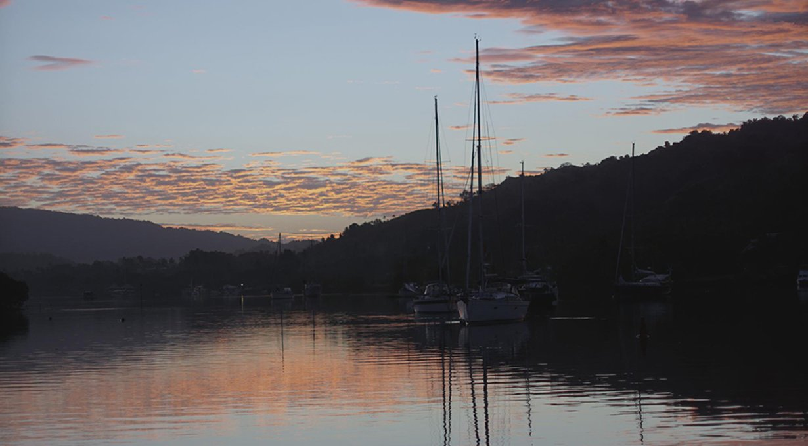
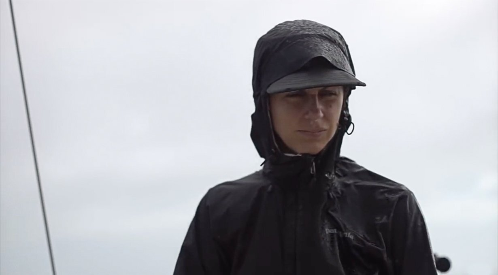
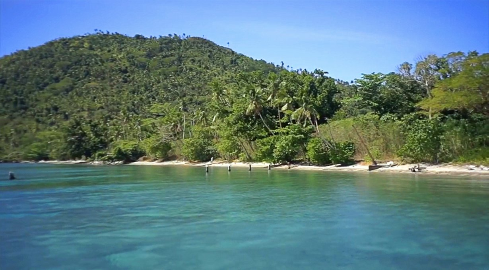
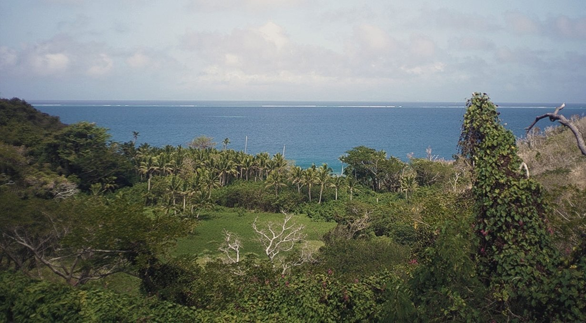
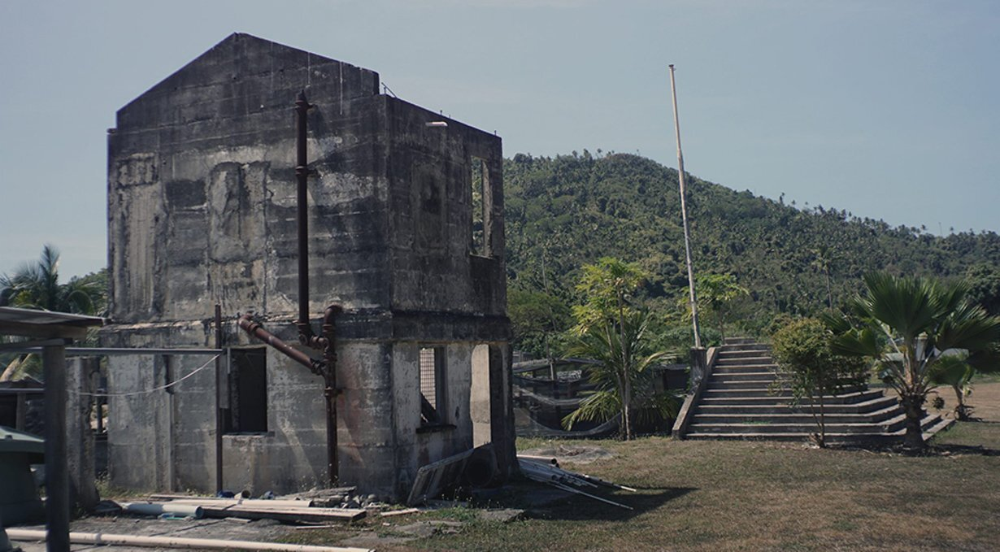
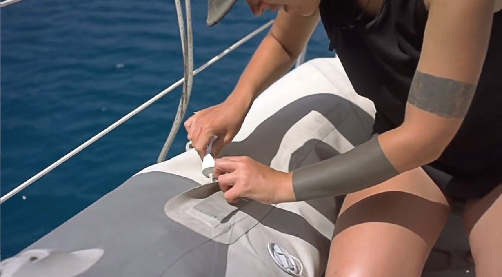
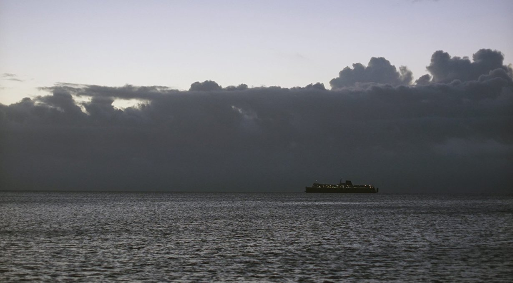

makogai
Our time in Makogai
18.09.01
Makogai, Fiji
Pino spent a long time in Savusavu, but by then, we were growing tired of this scenery, not of the market, or of the company to be found here, but just of having that same view every morning. We love this city, but when it's time to go it's time to go!
We left our mooring at 0900, and moved along over to Cousteau's resort to anchor (16° 48.623S, 179° 17.331E). The water wasn't clear, and the sun hidden behind clouds, making it difficult to see bommies(coral heads) beneath us. Devine dove in and checked our anchor. It was well set in sand.
The sailboat Privateer arrived shortly after us, having made the short passage by sail. We saw them manoeuver around, looking for a place to drop the hook. They hovered around some more, opening the headsail, furling it, in and out again, and moving the main in and out to make their way around the anchorage. Not many sailors will rely on wings alone to anchor. The crew of Privateer do as many tacks as necessary to get where they need to go—engines be damned!
We tried swimming to the beach that afternoon, but it was full of seaweed. We preferred staying on the tiny slab of beach lining the shore to watch the hundreds of tiny hermit crabs moving about. They were different sizes, wearing a grand variety of shells, some spirally, others conical, stained with purples, whites and oranges. We sat there in silence, listening to the sound of their shells rubbing against bits of broken coral. Such a pleasant sound.
We left our hermit crab friends behind, and went back aboard Pino. Tomorrow morning we had to get up at 0400 to sail to Makogai (pronounced mah-kon-guy), 49 nm away.
The wind changed in the night, we could hear the chain rubbing against bit of coral, catching, before coming off again with a jerk, the sound traveling to us by the chain through the hull. We should have probably buoyed the chain, but it was dark, and too late to think of doing this now.
We awoke to a dark night, and realized then that our windlass didn't work anymore. I recently undid the connections to clean bits of rust off. I thought maybe I didn't put them back in right, when I went inside to check everything was good and tight, but something was wrong with the windlass motor.
Luckily, we always make a point of always anchoring under 40 ft, and we haul the anchor up by hand most times (see our anchoring setup). Devine was able to get the anchor out, happy to see the chain wasn't stuck on coral after all. We motored off, since the wind was down, and pushed out of the reef. We found wind outside the protective belt of shallows, and after raising the main and unfurling the jib we flew!
It rained a lot on this short transit. In fact, it started to pour everytime I put my hand on the tiller.
When the sun came up, the clouds too, dispersed and disappeared. Both of us boiled under it, reddening in the fews places we'd forgotten to protect, like behind the knees, or in the gap of skin where the shirt ends and the pants begin.
We arrived to Makogai just around 1430, and entered using the western passage.
Waypoints:
Entrance to pass 17° 26.824'S 178 54.555E
Mid pass 17° 26.921S 178 54.927E
Anchor spot 17° 26.480S 178 57.201E (35 ft).
We found a spot, and set our anchor. We could see a few small coral heads, with an especially large one just behind us when our boat swung to the north. There was nothing to fear though, it lay deep, and the prevailing winds kept us off it most times. We wanted to anchor off the pier in shallower waters, but the space was occupied by a mooring.
I was excited to be here, because I'd read that there was a giant clam farm and a sea turtle breeding centre.
Tired and sun-baked, we went to bed early. We knew we'd have to go ashore to do sevusevu, a practice done in all of the Fijian villages. Sevusevu consists of presenting a yaqona root to the chief and of taking part in a kava drinking ceremony. Sevusevu is a way of welcoming you to the island, then the chief gives you permission to anchor, and to walk on the island. For the ceremony, the chief pounds the dried kava root into a fine powder, straining and mixing it with cold water. The chief will recite some text in Fijian, then cups his hands, claps three times and begins to serve the grog. The grog is drunk from a bilo, a half-shell of coconut. Everyone in the room takes part in this.
We decided we'd go and do sevusevu tomorrow morning instead, as we didn't think we could survive an evening of Kava.
The next day, I pumped air into Iggy and we decided to row to shore. Neither of us felt like putting Turnip on, we needed the exercise anyway, so we each grabbed a paddle and off we went! I was carrying our gift of yaqona root in a bag. The sailboat Scoots was anchored in deeper waters behind us, and came powering in with their dinghy, asking if we wanted a tow to shore. We figured why not, to hell with exercising, it's too damn hot anyway! We threw them a line so they could pull us along.
Just off the pier, there were 3 Fijian men working hard on a project. They were building additional concrete basins for their clam operation. The giant clams are endangered (that's what always happens when humans decide animals are delicious). Those clams are centenarians, it is sad that people have so little regard for that. We are glad people are trying to save them, but we know that when they're numbers go up, people will almost certainly start eating them again.
The locals here in Makogai grow them in basins, with water pumped up into the long concrete basins from Dalice Bay using pumps through long pipes. When big enough, they carry the clams back out to the water. These things can grow absurdly large, up to 129 cm across, and can weigh up to 200 kg! We stared at them, bathing in the basins, and they stared back at us, grinning creepily with their undulated lips.
Devine approached one of the locals, to ask about the location of the turtle farm, but unfortunately, the turtle farm was no more. There were no turtles in our future.
Vandy and Eric from SY Scoots had been to Makogai for 5 days, they pointed out the person we would need to talk to for sevusevu. The man was working on the concrete basins, shiny with sweat, he walked over, and welcomed us to the island. He wasn't the chief of the village, as he informed us there was none on the island, not anymore. Despite having no chief, the locals insisted on a sevusevu. The man was in work clothes, speckled with grey stains from working with cement. He brought us to a shaded area, under a set of covered roofs, with a black sheet of fabric laying on the ground. We arrived there, and he took a seat on the sheet.
Already then, we knew this wasn't going to be a traditional sevusevu. This man and the others around were too busy today to do it. We took a seat on the ground over the black sheet of fabric, and handed over the yaqona root. The man took it, and began to recite the traditional monologue, it ended with a chant, and three claps.
CLAP! CLAP! CLAP!
We understood nothing, of course. We sat there as the man did his thing, pretending to have a bilo in his hands, knocking on the ground 3 times. The ceremony was quick, but necessary. To be allowed to go on any Fijian island, it is only right to ask for permission, although I wonder if having to do this everyday is tedious for them. Once upon a time, when visitors to Fiji were rare, and few, I'm sure that spending a few hours with the occasional stranger was interesting and welcomed, but now it is a tourist destination and the traffic of strangers bearing gifts of yaqona root is constant. We thanked him for allowing us on the island, and let him return to his work.
About 20 minutes into the walk, we heard a "hello!" over our heads. Vandy waved at us from a high perch, standing on a ledge overlooking the footpath. "Want some internet?"
Devine and I moved over to check it out. We climbed off a muddy slope, and arrived to a place with a ratty-looking bench, and white ash everywhere on the ground beneath it. Eric was sitting on the bench, eyes on his cell. "Welcome to the internet bench." Here was the only place near our anchorage that offered a good signal, you get it from a tower on an island just south of here (Wakaya island).
We had not brought our phones or computers because we didn't expect to find a signal anywhere on the island. No matter, this was a vacation from the internet. Together, we walked down the path leading to the school some ways away. Vandy would pause every now and then, binoculars at the ready, looking for birds.
We spotted many lizards, scurrying away as we walked past, taking shelter in the bush. We saw other abandoned buildings from the former leper colony. They kept the Chinese, Fijians of Indian descent and Fijians lepers apart, and the women from the men too, which explained why there were so many buildings scattered about. Crazy to think that even in times of extreme hardship and disease, the segregation of people was still a thing.
We didn't make it to the school, the path there was too long and our stomachs yearned for food. The four of us made our way back to our respective dinghies. Vandy and Eric invited us for happy hour aboard their boat. We will never, ever, refuse such an offer, especially if it means we can get cold drinks! Ah, ice. A thing of luxury. Vandy and Eric make their own gin, using cheap vodka, and adding juniper berries, coriander seeds, lime zest and cardamom pods. It's brilliant. It also works to make cheap gin, into better-tasting gin.
Scoots offered to tow us again, and once more, we said yes. But when they pulled us this time round, I heard a loud "POW!" Then, both dinghy tubes began to deflate. Devine looked at me, noticing I seemed to be fusing with Iggy, getting lower and lower, and nearer to the water with every passing second.
We arrived then on Pino, my side near was flat. We thanked Scoots, and then watched Iggy as it continued to lose air while in the water. We were glad then that we didn't try to put the outboard on, that would have made Iggy lose air a lot quicker.
We pulled Iggy up on deck, to try and find the problem. It was clear to us then, there were no holes, but the seams had come apart in a few places. The glue had gone—from UV exposure we think—and the strain of being pulled by Scoots ripped them open. The final blow. Our dinghy is PVC, it was an inexpensive Plastimo dinghy that we got back in British Columbia that could only ever fair well in colder waters. Our budget at the time didn't permit us to get a Hypalon dinghy, also, we just didn't think there was that much difference between the two materials. Inflatables look damn sturdy when new, hard to imagine seams coming apart.
Our Iggy did not look so indestructible now.
I lost the original patch up kit from Plastimo on a bumpy dinghy ride in San Francisco. We'd found a backup kit in a used yacht gear shop in Alameda, that came with a brush, patches and glue. I found the kit, but the glue was just a white tube, with no instructions—great. I've never done a repair like this before, and we didn't have the internet to turn to for tutorials. I just went ahead, cleaned the area, and tried to glue the seams as best I could.
Then, I let it dry and later tried sitting in various places to see if more air would escape. It seemed good, and we took it for a ride to shore to test it. No problems. I brought the patch-up kit and air pump just in case. We went for a short walk on the beach with the intention of bringing Iggy up to a diving spot, near giant clams some ways away. After our walk, we returned to the dinghy to find one side had collapsed again.
We put Iggy back in the water, and pumped air back into the tube, and sat in the center, with Devine sitting on the backboard at the stern. We did our best to avoid sitting on the tubes themselves to keep the air from escaping again. We were rowing to Pino, with air slowly leaving the tubes. Devine was trying to row an inflatable with broken oar locks forward, while I was busy pumping more air into Iggy as we went along. Our dinghy had seen better days. For a moment I feared we'd have to swim back to the boat, Iggy in tow. We made it back, and again, watched as our inflatable friend lay limp in the water.
The glue did work in some areas, but seeing as how there were no instructions on the packaging and that we didn't have internet I couldn't be sure if i'd really done it right. We pulled Iggy back up on deck, and rolled it up. It didn't look like we'd be doing any trips back to shore, shame, really did want to see those giant clams in the water.
Devine called Scoots on the radio then, to tell them that our dinghy had a problem. Happy hour was still on, as they offered to pick us up. Eric came in a large dinghy and matching 15 HP outboard. Getting into a dinghy like that is a lot of fun, it has a hard bottom, lots of power and will get you places fast! We saw Pino get small, real fast, and Scoots got big, real, real big, real, real fast. The boat is 50 ft, and damn gorgeous.
We had a lovely night, always great to meet fellow cruisers, everyone is just so different and lovely in their own way.
We were leaving the next day, Vandy radioed us early in the morning, just a quarter to 0700. She packed us some juniper berries and spices so that we too could make our own boat gin. We motored past, and Eric threw it on our deck. We waved and thanked them. Eric had a large shell in his hands, and blew hard into it to bid us farewell.
We'd noticed then that another yacht we'd met yesterday had drifted way back into the anchorage. The wind had picked up in the night and they'd dragged anchor, luckily, the water in the entrance was shallower and their anchor got caught in it.
We'd heard the sound of a horn, late in the night, but didn't know what it was and our tired minds did not think of looking to find out its source, or why it had been sounded in the first place. We motored past the boat on our exit, asking if they were okay. "Yes, yes!" they said. It was hard to hear them, because of the wind, but I thought I heard them ask us about the horn last night. I assumed they'd asked if we had HEARD the horn, and so I answered that we had. They smiled and thanked us, which left me confused. "Why did they thank us?"
I realized my mistake then. They probably asked me if we had sounded the horn last night, aaaand I'd just taken credit for it. The story was that Scoots kept an anchor watch at night. When the wind picked up, and they saw the boat was further away in the anchorage they blew the horn in the night so they would hear and hopefully find out that they were dragging anchor.
We hoisted the sails, and Pino moved out of the reef, heading southward, towards our destination: Leleuvia, a small island south of Ovalau.
The Gin Recipe
Ingredients:
5 TBSP Juniper berries, 2 TBSP whole coriander seeds (crushed), 4 cardamom pods (crushed, add 1 per day) and about 2 TBSP of citrus zest.
Instructions:
Full recipe calls for 1.75L bottle of vodka plus another bottle large enough to hold the infusion, and eventually the entire 1.75L of gin. Crush the coriander, zest the lemons or limes. Add all ingredients except cardamom pods to half of the 1.75L of vodka. Add Cardamom pods, crushed, a day later. Let sit for 6 more days. Strain through a coffee filter, or other material to remove solids. Add remaining vodka, the gin won’t be clear, but it tastes fine! You can also do this to cheaper gin, to make it into super tasty gin!